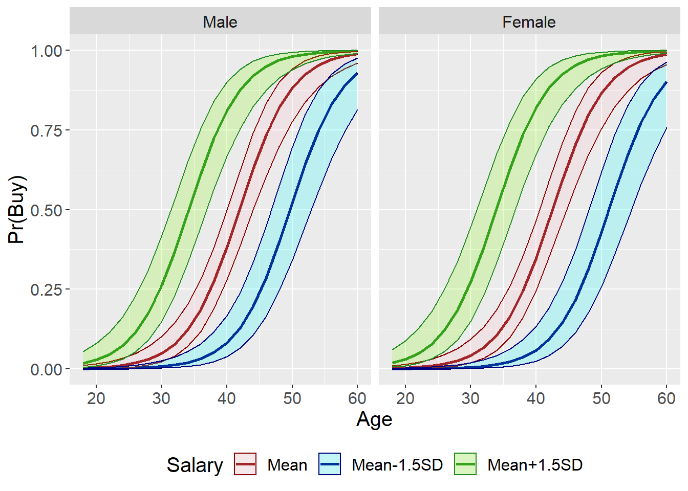

Topic 3 Logistic Regression
3.1 Motivation
- Marketers often observe binary outcomes
- Did a customer:
- purchase?
- subscribe?
- renew?
- respond?
- Did a customer:
- Using linear regression is not appropriate…
- …But logistic regression still allows us to:
- Understand IV/DV relationships
- Make predictions
3.2 R Packages and Datasets for Topic 3
library(ggplot2) # Advanced graphing capabilities
library(tidyr) # Easier programming
library(flextable) # Better HTML Tables
library(htmlTable) # Better HTML Tables
library(jtools) # Concise regression results
library(dplyr) # Easier programming
library(caret) # Create data partitions
load("Topic03/directmktg.rdata")
source("Topic03/or_table.R")
source("Topic03/logreg_cm.R")
source("Topic03/logreg_roc.R")
source("Topic03/gainlift.R")
source("Topic03/logreg_cut.R")3.3 Why not use linear regression?
Want to see how \(age\) affects \(buy\)
- \(buy=\begin{cases}1\text{ if yes/true}\\0\text{ if no/false}\end{cases}\)
Examine relationship with a scatterplot
What do we see?
Figure 3.1: Scatterplot with binary DV (R code)
Try linear regression: \(buy=\alpha+\beta_1 age\)
Table 3.1: Linear Regression Results (R code)
F(1,398)
251.7421
R²
0.3874
Adj. R²
0.3859
Est.
S.E.
t val.
p
(Intercept)
-0.7154
0.0702
-10.1930
0.0000
age
0.0285
0.0018
15.8664
0.0000
Standard errors: OLS
Good \(R^2\) and \(age\) is highly significant
So what’s the problem?
Predict \(buy\) from linear regression results:
\(\hat{buy}=-.7154+.0285age\)Prediction line shown in plot
Figure 3.2: Predicted Values from Linear Regression (R code)
Add \(age\) categories and plot mean \(buy\) for each category
- What “shape” does this resemble?
- Can we use this “shape” to model the relationship?
Figure 3.3: Buy for Age Groups (R code)
3.4 Understanding Logistic Regression
- Uses the logistic function:
\(f(z)=\frac{e^u}{1+e^u}\)- \(f(z)\) is the probability of event happening
- \(u\) is a linear function, such as: \(\alpha+\beta x\)
- Ensures predictions are never above 1 or below 0
Figure 3.4: Logistic Function (R code)
- Probability of event success vs. failure \(=\frac{f(z)}{1-f(z)}=\) Odds Ratio (\(OR\))
- Suppose probability of success \(=.01\), then:
\(OR=\frac{.01}{1-.01}=.0101\)- Suppose probability of success \(=.001\), then:
\(OR=\frac{.001}{1-.001}=.0010\) - Suppose probability of success \(=.99\), then:
\(OR=\frac{.99}{1-.99}=99\) - Suppose probability of success \(=.999\), then:
\(OR=\frac{.999}{1-.999}=999\) - Suppose probability of success \(=.5\), then:
\(OR=\frac{.5}{1-.5}=1\)
- Suppose probability of success \(=.001\), then:
- Suppose probability of success \(=.01\), then:
- Substituting logistic function for \(f(z)\) into Odds Ratio \(\Rightarrow\)
\(OR=e^u=e^{\alpha+betax}\)- \(\frac{f(z)}{1-f(z)}=\frac{\frac{e^u}{1+e^u}}{1-\frac{e^u}{1+e^u}}=\frac{\frac{e^u}{1+e^u}}{\frac{1+e^u}{1+e^u}-\frac{e^u}{1+e^u}}=\frac{\frac{e^u}{1+e^u}}{\frac{1}{1+e^u}}=e^u\)
- Can transform exponential function into linear \(\Rightarrow\)
\(Logit=\ln(OR)=\alpha+\beta x\)
3.5 Conducting Logistic Regression
- Model Estimation
- Assessing Model Fit
- Goodness of Fit Measures
- Classification Matrix
- ROC Curve
- Interpreting Coefficients
- Gains and Lift
3.5.1 Model Estimation
- Best to use training data and holdout data
- Estimate model on training data (~75% of sample)
- Check prediction accuracy on holdout data (~25%)
- Can estimate either (1) \(OR\) or (2) \(Logit\) formulation
- \(OR=e^{\alpha+\beta_1x_1+\cdots+\beta_kx_k}\)
- \(Logit=\alpha+\beta_1x_1+\cdots+\beta_kx_k\)
- Independent variables:
- Can be one or more
- Can be continuous or categorical/factor
3.5.2 Assessing Model Fit
3.5.2.1 Goodness-of-Fit Measures
- Overall significance based on \(-2LL\)
- Lower (closer to \(0\)) \(-2LL\) indicates a better fit
- Compare \(-2LL\) of estimated model with “null” model
- McFadden’s Pseudo-\(R^2\)
- Values range from 0 to 1 like linear regression
- Interpreted in a similar manner
- Amount of variation in DV explained by IVs
3.5.2.2 Classification Matrix
- How does the model do in predicting outcomes?
- Generate predicted probability of success, \(p(\text{SUCCESS})\), for each observation
- If \(p(\text{SUCCESS})\ge0.5\), predict \(\text{SUCCESS}=1\)
- If \(p(\text{SUCCESS})<0.5\), predict \(\text{SUCCESS}=0\), or \(\text{FAILURE}\)
- Check predictions against actual outcomes
- Examine both training and holdout data

Figure 3.5: Classification Matrix
- Three main measures
- Sensitivity: Predicted success given actual success
- \(p(\hat{+}|+)=a/(a+c)\)
- Specificity: Predicted failure given actual failure
- \(p(\hat{-}|-)=d/(b+d)\)
- Overall correctly classified
- \((a+d)/(a+b+c+d)\)
- Sensitivity: Predicted success given actual success
- Sensitivity vs. Specificity
- Ideally, want both to be high, but…
the \(p(\text{SUCCESS})\ge\pi\) threshold can be changed - Why change \(\pi\)? Avoid false positives or negatives
- By default:
- Increasing sensitivity decreases specificity
- Increasing specificity decreases sensitivity
- Ideally, want both to be high, but…
- Overall correctly classified
- Compare with Proportional Chance Criterion (\(PCC\))
- \(PCC\) is the “average” probability of classification based on group sizes
- \(PCC=p^2+(1-p)^2\) where \(p\) is the proportion of sample in the \(\text{SUCCESS}\) group
- Overall correctly classified \(>PCC\) considered good fit when examining holdout data
- Compare with Proportional Chance Criterion (\(PCC\))
3.5.2.3 ROC Curve
- Plot sensitivity by \(1-\) specificity as \(\pi\) goes from \(0\) to \(1\)
- More area under curve means better model
Area under Curve Discrimination AUC = .5 None .5 < AUC < .7 Poor .7 ≤ AUC < .8 Acceptable .8 ≤ AUC < .9 Excellent AUC ≥ .9 Outstanding 
Figure 3.6: Sample ROC Curve
3.5.3 Interpreting Coefficients
- Relationship between DV and each IV
- \(H_0: \beta_k=0\) vs. \(H_a: \beta_k\ne0\)
- Interpret significant relationships
- Interpretation depends on \(OR\) or \(Logit\) estimation
- Direction of relationship:
- \(Logit\) estimation: \(\beta_k>0\) for positive, \(\beta_k<0\) for negative
- \(OR\) estimation: \(\beta_k>1\) for positive, \(\beta_k<1\) for negative
- Magnitude of change:
- \(Logit\) estimation: coefficients are not particularly useful
- \(OR\) estimation:
- Percentage change in odds
- Compare probabilities between groups
3.5.4 Gain and Lift
- Evaluate performance of classification
- Example:
- Suppose \(10\%\) of \(2000\) customers will accept offer
- For \(100\) random customers, expect \(10\) accepted offers
- Model predicts some customers more likely to accept
- Instead of contacting \(100\) random customers…
Contact \(100\) most likely to accept based on model - Continue doing this in groups of \(100\) (or \(200\), etc.)
- Gain and lift provide measures of how much better the model performs vs. no model/random
- Process
- Predict $p() for each observation and sort descending
- Split into 10 (deciles) or 20 (demi-deciles) ordered groups
- Calculate \(\%\) observations and \(\%\) successes for each group
3.5.4.1 Gain
- Cumulative successes up to that group divided by total successes across all groups
- Plot on \(y\)-axis, with cumulative percent of observations on \(x\)-axis

Figure 3.7: Typical Gain Chart Shape
3.5.4.2 Lift
- Ratio of cumulative success up to that group divided by expected success from no model
- Plot on \(y\)-axis, with cumulative percent of observations on \(x\)-axis
Figure 3.8: Typical Lift Chart Shape
3.5.5 Sensitivity/Specificity Plots
- Sensitivity, Specificity, and Accuracy depend on the cutoff value for predicting SUCCESS/ FAILURE
- While 0.5 is the most common threshold, it might not be the best threshold for prediction
- Sensitivity/Specificity Plots can show the analyst how each changes with different cutoff values
- The analyst can try to balance the three depending on the purpose of project

Figure 3.9: Sample Sensitivy/Specificity Plot
- The analyst can try to balance the three depending on the purpose of project
3.6 Logistic Regression Example
3.6.1 Overview
- Purchase data for direct marketing campaign
- 400 observations of individual responses
- DV: Purchase made, \(buy\) (factor: Yes, No)
- IVs:
- Age, \(age\)
- Estimated Salary ($000s), \(salary\)
- Gender, \(gender\) (factor: Male, Female)
- Predict likelihood of purchase
3.6.2 Estimation Results
- Logit formulation results
Table 3.2: Logistic Regression Results (Logit Formulation) (R code) χ²(3) 182.2574 Pseudo-R² (Cragg-Uhler) 0.6231 Pseudo-R² (McFadden) 0.4638 AIC 218.6842 BIC 233.5126 Est. S.E. z val. p (Intercept) -13.1661 1.6217 -8.1187 0.0000 age 0.2502 0.0321 7.7961 0.0000 salary 0.0406 0.0067 6.0265 0.0000 genderFemale -0.4069 0.3498 -1.1631 0.2448 Standard errors: MLE Model p-value = 0.0000 - Odds Ratio Coefficients
Table 3.3: Logistic Regression Odds Ratio Coefficients (R code) Parameter
OR Est
p
2.5%
97.5%
(Intercept)
0.0000
0.0000
0.0000
0.0000
age
1.2843
0.0000
1.2060
1.3677
salary
1.0415
0.0000
1.0278
1.0553
genderFemale
0.6657
0.2448
0.3354
1.3215
3.6.3 Overall Model Fit
- Based on the likelihood ratio \(\chi^2\) test with a \(p\text{-value}<.0001\), the overall model is significant (see Table 3.2)
- McFadden’s Pseudo-\(R^2\) of \(.464\) means that the model explains about \(46\%\) of the variation between buyers/non-buyers (see Table 3.2)
- Classification Matrix for the Training Sample shows:
- High sensitivity (\(72.2\%\))
- High specificity (\(91.2\%\))
- Correctly classified (\(84.4\%\)) > PCC (\(54.0\%\))
Table 3.4: Classification Matrix for Training Sample (R code) Confusion Matrix and Statistics Reference Prediction No Yes No 176 30 Yes 17 78 Accuracy : 0.8439 95% CI : (0.7978, 0.883) No Information Rate : 0.6412 P-Value [Acc > NIR] : 4.55e-15 Kappa : 0.6514 Mcnemar's Test P-Value : 0.08005 Sensitivity : 0.7222 Specificity : 0.9119 Pos Pred Value : 0.8211 Neg Pred Value : 0.8544 Prevalence : 0.3588 Detection Rate : 0.2591 Detection Prevalence : 0.3156 Balanced Accuracy : 0.8171 'Positive' Class : Yes PCC = 53.99% - Classification Matrix for the Test/Holdout Sample shows:
- High sensitivity (\(77.1\%\))
- High specificity (\(90.6\%\))
- Correctly classified (\(85.9\%\)) > PCC (\(54.3\%\))
Table 3.5: Classification Matrix for Test/Holdout Data (R code) Confusion Matrix and Statistics Reference Prediction No Yes No 58 8 Yes 6 27 Accuracy : 0.8586 95% CI : (0.7741, 0.9205) No Information Rate : 0.6465 P-Value [Acc > NIR] : 2.004e-06 Kappa : 0.6866 Mcnemar's Test P-Value : 0.7893 Sensitivity : 0.7714 Specificity : 0.9062 Pos Pred Value : 0.8182 Neg Pred Value : 0.8788 Prevalence : 0.3535 Detection Rate : 0.2727 Detection Prevalence : 0.3333 Balanced Accuracy : 0.8388 'Positive' Class : Yes PCC = 54.29% - ROC Curve for Training Sample
- Area \(>.90\) suggests an outstanding model fit
)](_main_files/figure-html/t3roctrain-1.png)
Figure 3.10: ROC Curve for Training Sample (R code)
- ROC Curve for Holdout Sample
- Area \(>.90\) suggests an outstanding model fit
Figure 3.11: ROC Curve for Test/Holdout Sample (R code)
3.6.4 Interpreting Coefficients
- \(age\) is positive (\(OR>1\)) and significant (\(p<.001\))
- \(1\) year increase in \(age\) increases odds of buying by a factor of \(1.28\) (or odds of buying increase by \(25\%\))
- \(salary\) is positive (\(OR>1\)) and significant (\(p<.001\))
- \(\$1000\) increase in \(salary\) increases odds of buying by a factor of \(1.04\) (or odds of buying increase by \(4\%\))
- \(gender\) is negative (\(OR<1\)), but not significant (\(p=.245\))
- Had it been significant… Being female decreases odds of buying by a factor of \(.67\) (or odds of buying decrease by \(33\%\))
- Can visually examine how \(\Pr(buy)\) changes with a variable for continuous IVs
- Factor variables can be separate lines (see Figure 3.12 or separate plots see 3.13)
)](_main_files/figure-html/t3mpage01-1.png)
Figure 3.12: Margin Plot for Age (Separate Lines for Gender) (R code)
Figure 3.13: Margin Plot for Age (Separate Plots for Gender) (R code)
- Can create different lines for specific levels of another continuous IV
Figure 3.14: Margin Plot for Age at Different Levels of Salary (R code)
Figure 3.15: Margin Plot for Salary at Different Levels of Age (R code)
- Factor variables can be separate lines (see Figure 3.12 or separate plots see 3.13)
3.6.5 Gain
Can examine gain for both the training and holdout samples…
But using holdout is more informative
Contacting the top \(25\%\) of predicted buyers yields nearly \(60\%\) of actual buyers
Table 3.6: Gain Table for Training and Test/Holdout Samples (R code)
# A tibble: 20 x 3 `% Sample` Holdout Training <dbl> <dbl> <dbl> 1 0.05 0.114 0.130 2 0.1 0.2 0.25 3 0.15 0.343 0.370 4 0.2 0.486 0.481 5 0.25 0.6 0.593 6 0.3 0.743 0.713 7 0.35 0.771 0.778 8 0.4 0.829 0.843 9 0.45 0.914 0.907 10 0.5 0.971 0.935 11 0.55 1 0.981 12 0.6 1 0.991 13 0.65 1 0.991 14 0.7 1 0.991 15 0.75 1 1 16 0.8 1 1 17 0.85 1 1 18 0.9 1 1 19 0.95 1 1 20 1 1 1)](_main_files/figure-html/t3gainplot-1.png)
Figure 3.16: Gain Chart for Training and Test/Holdout Samples (R code)
3.6.6 Lift
Can examine gain for both the training and holdout samples…
But using holdout is more informative
Contacting the top \(25\%\) of predicted buyers provides lift of nearly 2.5
Table 3.7: Lift Table for Training and Test/Holdout Samples (R code)
# A tibble: 20 x 3 `% Sample` Holdout Training <dbl> <dbl> <dbl> 1 0.05 2.83 2.60 2 0.1 2.2 2.51 3 0.15 2.42 2.48 4 0.2 2.53 2.42 5 0.25 2.48 2.38 6 0.3 2.54 2.38 7 0.35 2.25 2.23 8 0.4 2.10 2.11 9 0.45 2.06 2.02 10 0.5 1.96 1.88 11 0.55 1.83 1.79 12 0.6 1.68 1.66 13 0.65 1.55 1.53 14 0.7 1.43 1.42 15 0.75 1.34 1.34 16 0.8 1.25 1.25 17 0.85 1.18 1.18 18 0.9 1.11 1.11 19 0.95 1.05 1.06 20 1 1 1Figure 3.17: Lift Chart for Training and Test/Holdout Samples (R code)
3.7 Suggested Readings
- R for Marketing Research and Analytics. 2nd Edition (2019). Chapman, Chris; McDonnel Feit, Elea
- BGSU Library Link:
http://maurice.bgsu.edu/record=b4966554~S9 - eBook through BGSU Library:
https://link-springer-com.ezproxy.bgsu.edu/book/10.1007%2F978-3-030-14316-9 - Chapter 9.2: Linear Models for Binary Outcomes: Logistic Regression
- BGSU Library Link:
- OpenIntro Statistics. 4th Edition (2019). Diez, David; Cetinkaya-Rundel, Mine; Barr, Christopher D.
- Available at OpenIntro.org:
https://www.openintro.org/book/os/ - Chapter 9: Multiple and logistic regression
- Available at OpenIntro.org:
- Multivariate Data Analysis. Hair, Joseph F.; Black, William C.; Babin, Barry J.; Anderson, Rolph E.
- 7th Edition: Search for “multivariate data analysis 7th edition hair” Chapter 6: Logistic Regression with a Binary Dependent Variable
- 5th Edition: Course reserves
- Chapter 5: Multiple Discriminant Analysis and Logistic Regression (pp. 276-281; 314-321)
3.8 R Code
Figure 3.1
directmktg %>%
mutate(buy01=as.numeric(buy)-1) %>% # Change 'buy' to 0-1
ggplot(aes(x=age, y=buy01)) +
geom_point(size=2) +
labs(x="Age", y="Buy")Figure 3.2
directmktg %>%
select(age) %>% # Select only the age variable
mutate(yhat=predict.lm(model,.)) %>% # Predict y from model
# Next line creates variable to highlight negative predictions
mutate(neg=as.factor(ifelse(yhat<0,"Yes","No"))) %>%
ggplot(aes(x=age, y=yhat, color=neg)) +
geom_point(size=3) +
scale_color_manual(values=c("Yes"="red", # Manually set point colors
"No"="black"),
guide="none") +
labs(x="Age", y="Linear Prediction")Figure 3.3
# Create data frame grouped by age
dmgrp <- directmktg %>%
# 'cut' breaks a continuous variable into groups of each width
# 'as.numeric' keeps the new variable as integer (vs. factor)
mutate(agegrp = as.numeric(cut(age, 9))) %>%
group_by(agegrp) %>%
summarise(age=mean(age), buy=mean(as.numeric(buy)-1))
# Run logistic model to create prediction to make s-curve
binmod <- glm(buy~age, directmktg, family="binomial")
# Create dataframe with predicted values
dmpred <- directmktg %>%
select(age, buy) %>%
mutate(yhat=predict(binmod, type="response"),
buy=as.numeric(buy)-1)
# Create combined plot; each geom with separate data
ggplot() +
geom_point(data=directmktg,
aes(x=age, y=(as.numeric(buy)-1)),
size=3, color="red") +
geom_line(data=dmgrp,
aes(x=age, y=buy),
size=1.5, color="midnightblue") +
geom_line(data=dmpred,
aes(x=age, y=yhat),
size=1.5, color="darkorange") +
theme(text=element_text(size=15)) +
labs(x="Age", y="Buy")Figure 3.4
# Create simulated data frame based on logistic function
u=seq(-7,7,.05)
fz=exp(u)/(1+exp(u))
ufz=data.frame(u=u, fz=fz)
# Plot function
ufz %>%
ggplot(aes(x=u, y=fz)) +
geom_line(color="darkorange", size=1.5) +
theme(text=element_text(size=15),
panel.grid.major.x = element_blank()) +
scale_x_continuous(breaks=0, minor_breaks=NULL) +
scale_y_continuous(breaks=seq(0,1,1), minor_breaks=NULL) +
labs(x="u", y="f(z)")Figure 3.10
# Use the 'logreg_roc.R' user-defined script
# It was loaded above with the packages
# Requires package 'pROC' and 'ggplot2
logreg_roc(model, # Object with model results
train) # Data to use (i.e., training vs. testing)Figure 3.11
# Use the 'logreg_roc.R' user-defined script
# It was loaded above with the packages
# Requires package 'pROC' and 'ggplot2
logreg_roc(model, # Object with model results
test) # Data to use (i.e., training vs. testing)Figure 3.12
# Want to predict for different levels of IVs
# Because we often do this for other continuous variables, we first
# create a df with mean values of all continuous IVs
# at different levels of the factor variable (if there are any)
# NOTE: variable names must be EXACTLY the same as in model
m.ivs <- train %>%
group_by(gender) %>%
summarise(age=mean(age, na.rm=TRUE),
salary=mean(salary, na.rm=TRUE))
# Create new data for prediction with 'age' as focus
# This will be used for the next two figures
age.pred <- merge(data.frame(age=seq(18,60,2)),
m.ivs[ ,c("salary", "gender")])
# Create data frame with predicted values and confidence bands
train.pred <-
# 'cbind' combines objects by columns
cbind(age.pred,
predict(model, # Model to predict values with
age.pred, # New data to use for IVs
type="link", # Return log-odds predictions
se=TRUE)) %>% # Get std.err. for CIs
mutate(pred=plogis(fit), # Calculate pr(buy)
upr=plogis(fit+(qnorm(0.975)*se.fit)), # Upper CI
lwr=plogis(fit-(qnorm(0.975)*se.fit))) # Lower CI
# Create plot with gender on same plot
ggplot(aes(x=age, y=pred), data=train.pred) +
geom_line(aes(color=gender), size=1) +
geom_ribbon(aes(ymin=lwr, ymax=upr,
color=gender, fill=gender), alpha=.2) +
theme(legend.position="bottom",
plot.caption=element_text(size=8)) +
scale_color_manual(values=c("red4", "navy")) +
scale_fill_manual(values=c("pink", "cyan")) +
labs(x="Age", y="Pr(Buy)", color="Gender", fill="Gender",
caption="Calculated at mean value of salary")Figure 3.13
# Create plot with gender on same plot
ggplot(aes(x=age, y=pred), data=train.pred) +
geom_line(aes(color=gender), size=1) +
geom_ribbon(aes(ymin=lwr, ymax=upr,
color=gender, fill=gender), alpha=.2) +
facet_grid(~gender) +
theme(legend.position="none",
plot.caption=element_text(size=8)) +
scale_color_manual(values=c("red4", "navy")) +
scale_fill_manual(values=c("pink", "cyan")) +
labs(x="Age", y="Pr(Buy)", caption="Calculated at mean value of salary")Figure 3.14
# Want to predict for different levels of IVs
# Because we often do this for other continuous variables, we first
# create a df with values of all continuous IVs
# at different levels of the factor variable (if there are any)
# NOTE: variable names must be EXACTLY the same as in model
msd.ivs <- train %>%
group_by(gender) %>% # Group on factor variable
# Calculate values for different levels of IVs
summarise(age_mn15=mean(age, na.rm=TRUE)-1.5*sd(age, na.rm=TRUE),
age_m=mean(age, na.rm=TRUE),
age_mp15=mean(age, na.rm=TRUE)+1.5*sd(age, na.rm=TRUE),
salary_mn15=mean(salary, na.rm=TRUE)-1.5*sd(salary, na.rm=TRUE),
salary_m=mean(salary, na.rm=TRUE),
salary_mp15=mean(salary, na.rm=TRUE)+1.5*sd(salary, na.rm=TRUE)) %>%
# Convert data from wide to long
pivot_longer(cols=!gender, names_to=c(".value","measure"), names_sep="_")
age.pred <- merge(data.frame(age=seq(18, 60, 2)), # Variable of interest
msd.ivs[,c("gender", "salary", "measure")])
# Create data frame with predicted values and confidence bands
train.pred <-
# 'cbind' combines objects by columns
cbind(age.pred,
predict(model, # Model to predict values with
age.pred, # New data to use for IVs
type="link", # Return log-odds predictions
se=TRUE)) %>% # Get std.err. for CIs
mutate(pred=plogis(fit), # Calculate pr(buy)
upr=plogis(fit+(qnorm(0.975)*se.fit)), # Upper CI
lwr=plogis(fit-(qnorm(0.975)*se.fit)), # Lower CI
gender=as.factor(gender), # Factor for plot
salary=as.factor(measure)) # Factor for plot
ggplot(aes(x=age, y=pred), data=train.pred) +
geom_line(aes(color=salary), size=1) +
geom_ribbon(aes(ymin=lwr, ymax=upr,
color=salary, fill=salary), alpha=.2) +
facet_grid(.~gender) + # Create separate plots for gender
theme(legend.position="bottom") +
scale_color_manual("Salary",
values=c("red4", "navy", "forestgreen"),
labels=c("Mean", "Mean-1.5SD", "Mean+1.5SD")) +
scale_fill_manual("Salary",
values=c("pink", "cyan", "lawngreen"),
labels=c("Mean", "Mean-1.5SD", "Mean+1.5SD")) +
labs(x="Age", y="Pr(Buy)")Figure 3.15
# Use df 'msd.ivs' from above
sal.pred <- merge(data.frame(salary=seq(15, 150, 5)), # Variable of interest
msd.ivs[,c("gender", "age", "measure")])
# Create data frame with predicted values and confidence bands
train.pred <-
# 'cbind' combines objects by columns
cbind(sal.pred,
predict(model, # Model to predict values with
sal.pred, # New data to use for IVs
type="link", # Return log-odds predictions
se=TRUE)) %>% # Get std.err. for CIs
mutate(pred=plogis(fit), # Calculate pr(buy)
upr=plogis(fit+(qnorm(0.975)*se.fit)), # Upper CI
lwr=plogis(fit-(qnorm(0.975)*se.fit)), # Lower CI
gender=as.factor(gender), # Factor for plot
age=as.factor(measure)) # Factor for plot
ggplot(aes(x=salary, y=pred), data=train.pred) +
geom_line(aes(color=age), size=1) +
geom_ribbon(aes(ymin=lwr, ymax=upr,
color=age, fill=age), alpha=.2) +
facet_grid(.~gender) + # Create separate plots for gender
theme(legend.position="bottom") +
scale_color_manual("Age",
values=c("red4", "navy", "forestgreen"),
labels=c("Mean", "Mean-1.5SD", "Mean+1.5SD")) +
scale_fill_manual("Age",
values=c("pink", "cyan", "lawngreen"),
labels=c("Mean", "Mean-1.5SD", "Mean+1.5SD")) +
labs(x="Salary", y="Pr(Buy)")Figure 3.16
# Plot was already returned in the previous call to 'gainlift'
glresults$gainplotFigure 3.17
# Plot was already returned in the previous call to 'gainlift'
glresults$gainliftFigure 3.18
# Use the 'logreg_cut.R' user-defined script
# It was loaded above with the packages
# Requires packages 'ggplot2'
logreg_cut(model, train, "Yes")Figure 3.19
# Use the 'logreg_cut.R' user-defined script
# It was loaded above with the packages
# Requires packages 'ggplot2'
logreg_cut(model, test, "Yes")Table 3.1
model <- directmktg %>%
mutate(buy=as.numeric(buy)-1) %>%
lm(buy ~ age, .)
# NOTE: 'summ' uses the 'jtools' package
summ(model, model.info=FALSE, digits=4)
# For virtual environment, use 'summary' from Base R,
# but manually calculate McFadden's Pseudo-Rsq
summary(model)
Mrsq <- 1-model$deviance/model$null.deviance
cat("McFadden's Pseudo-Rsquared = ", round(Mrsq, digits=4)Table 3.2
# Use 'caret' package to create training and test/holdout samples
# This will create two separate dataframes: train and test
set.seed(4320)
inTrain <- createDataPartition(y=directmktg$buy, p=.75, list=FALSE)
train <- directmktg[inTrain,]
test <- directmktg[-inTrain,]
# Estimate the model on the training data
model <- glm(buy ~ age + salary + gender, train, family="binomial")
# NOTE: 'summ' uses the 'jtools' package
summ(model, model.info=FALSE, digits=4)
# For virtual environment, use 'summary' from Base RTable 3.3
# Use the 'or_table.R' user-defined script
# It was loaded above with the packages
flextable(or_table(model))Table 3.4
# Use the 'logreg_cm.R' user-defined script
# It was loaded above with the packages
# Requires package 'caret'
logreg_cm(model, # Object with model results
train, # Data to use (i.e., training vs. testing)
"Yes") # Factor level for "True"Table 3.5
# Use the 'logreg_cm.R' user-defined script
# It was loaded above with the packages
# Requires package 'caret'
logreg_cm(model, # Object with model results
test, # Data to use (i.e., training vs. testing)
"Yes") # Factor level for "True"Table 3.6
# Use the 'gainlift.R' user-defined script
# It was loaded above with the packages
# Requires packages 'ggplot2', 'dplyr', and 'tidyr'
# Returns a list of four things:
# gainplot, liftplot, gaintable, lifttable
glresults <- gainlift(model, train, test, "Yes")
glresults$gaintableTable 3.7
# Table was already returned in the previous call to 'gainlift'
glresults$lifttable